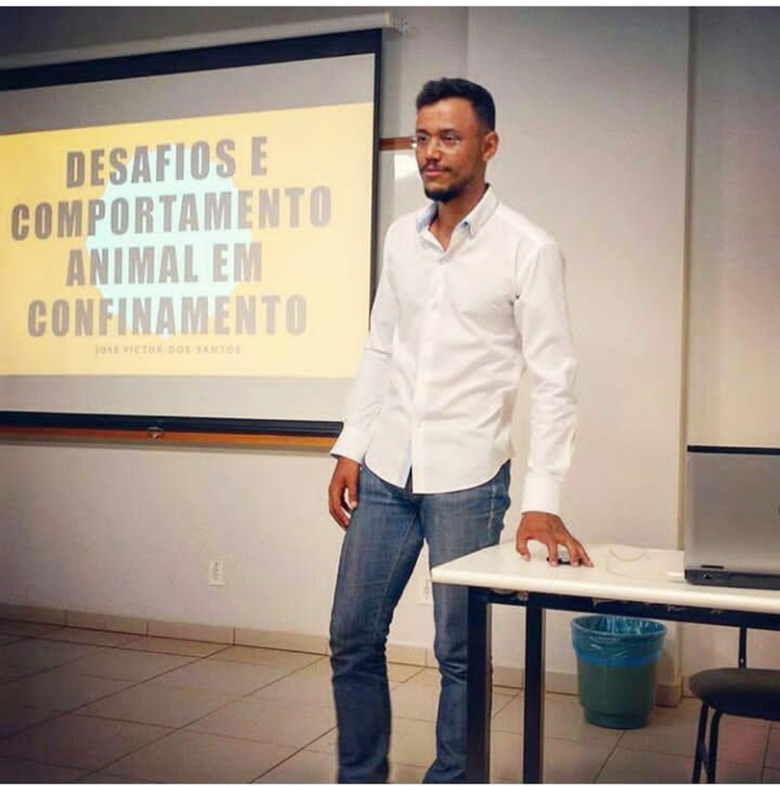

Tenho 33 anos e sou estudante no primeiro período de Sistemas de Informação na Universidade Federal de Uberlândia.
Falo inglês fluentemente e sou apaixonado por tecnologia. Quando me formei em Zootecnia em 2017 e atuei na área de produção de carne bovina, me deparei
com varias situações onde soluções poderiam ter sido desenvolvidas. O que me motivou a buscar uma nova graduação.
Com experiência em criação de conteúdo para redes sociais (@rebootnerd), sou escritor de roteiros audiovisuais e apaixonado por filmes.

Habilidades
Técnicas
HTML, CSS, JavaScript (Intermediário)
Microsoft Azure (AZ-900) (Iniciante)
Scrum Overview (Iniciante)
Fundamentos Básicos do SAP/4HANA (Nivel Iniciante)
Interpessoais
Resolução de problemas, trabalho em equipe e alcance de metas
Todo projeto visa solucionar um problema. É de suma importância ser capaz de trabalhar em equipe para que essa meta seja alcançada, da forma mais viável possivel
Experiencias e Projetos
Experiencias
Gerente Técnico de Confinamento Bovino - Fui responsável por coordenar tratos em fazendas usando um software de gestão de
confinamento. A experiência me ajudou a
desenvolver habilidades analíticas, melhorar a produtividade e simplificar processos.
Projetos
Criação de conteúdo sobre filmes e séries, onde uso da inteligencia artificial no auxílio da produção dos vídeos. Que costumam ser postados diáriamente. @rebootnerd